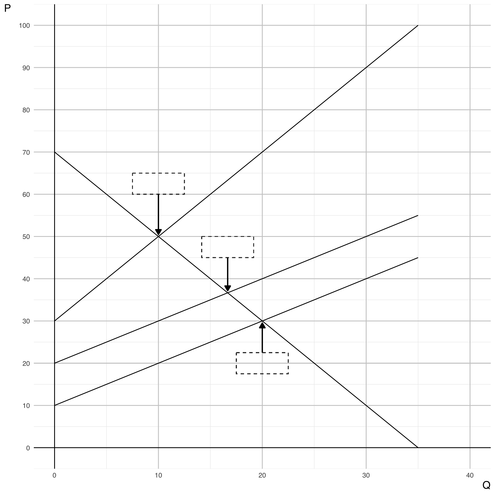
ECON 340 - Midterm Exam I
SUNY Geneseo, Fall 2025
Section 1. Multiple Choice
Question 1
In a competitive market, the demand curve can also be interpreted as the:
- Marginal Cost (MC) curve for consumers
- Marginal Benefit (MB) or willingness-to-pay curve
- Average Benefit curve for producers
- Total revenue function for firms
Show answer
b. Marginal Benefit (MB) or willingness-to-pay curve
Explanation:
In microeconomics, the demand curve represents how much consumers are willing to pay for each additional unit of a good. This willingness to pay reflects the Marginal Benefit (\(MB\)) they receive from consuming one more unit. Therefore, the demand curve is also interpreted as the \(MB\) curve. It is not related to producers’ costs or total revenue, so options a, c, and d are incorrect.
Question 2
In welfare analysis, benefits are measured as:
- The area under the supply curve
- The area under the demand curve
- The total costs minus total revenue
- The equilibrium price times quantity
Show answer
b. The area under the demand curve
Explanation:
In welfare analysis, the total benefit to consumers is calculated as the area under the demand curve up to the quantity consumed. This area captures the sum of individual marginal benefits (\(MB\)) for each unit purchased. The supply curve represents marginal cost, not benefits, and equilibrium price × quantity represents total expenditure, not welfare benefit.
How Total Benefit (TB) Comes from Marginal Benefit (MB) — No Calculus Needed
Think of Marginal Benefit (MB) as the value of each extra unit you consume.
If you buy units one by one, you could make a list like:
| Unit | Value (MB) |
|---|---|
| 1st unit | MB₁ |
| 2nd unit | MB₂ |
| 3rd unit | MB₃ |
| … | … |
Then your Total Benefit (TB) is simply:
\[ TB = MB_1 + MB_2 + MB_3 + \cdots + MB_n \]
That is just adding up the value of each unit. No calculus — only summation.
Visual Interpretation
- On a graph, we put Quantity (Q) on the x-axis and Marginal Benefit (MB) on the y-axis.
- Each unit of Q can be drawn as a vertical bar whose height is the MB for that unit.
- Stacking these bars side by side builds a staircase of value.
- If you shade all the bars from Q = 0 up to Q = 20, that entire shaded area represents TB.
✅ Key Idea:
Total Benefit is just the sum of all tiny MB rectangles.
When we draw them with bars, we can see TB building up one block at a time.
Why economists sometimes say “area under the MB curve”
If we keep making the bars thinner and thinner (like cutting the units into very fine pieces), the stacked bars start to look like a smooth shaded area.
Even without using integrals, we can say:
TB = Sum of tiny MB bars × tiny width of each bar
As the bars get thinner: \[ TB(Q) \approx \sum_{i=1}^{n} MB(Q_i) \cdot \Delta Q_i \quad \text{(many thin bars stacked side by side)}, \]
- \(\Delta Q_i\) is the width of that small step in quantity.
So, “area under the MB curve” simply means “adding up the value of lots of tiny MB bars.”
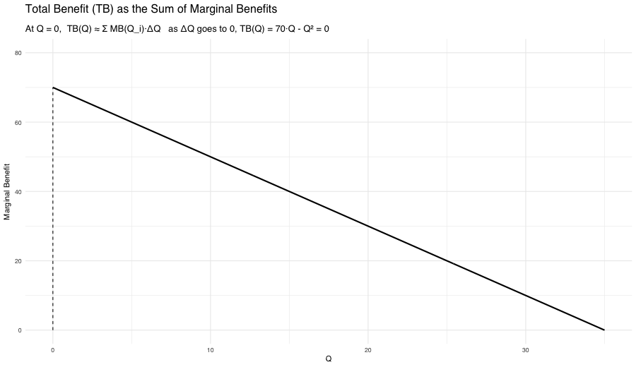
Question 3
Deadweight loss arises because:
- Taxes increase government revenue.
- Some mutually beneficial trades no longer occur.
- Prices rise above equilibrium.
- Producers always pass the full tax to consumers.
Show answer
b. Some mutually beneficial trades no longer occur.
Explanation:
Deadweight Loss (DWL) represents the loss in total social welfare caused by a distortion that prevents the socially efficient level of trade.
- For taxes or price controls, DWL occurs because mutually beneficial trades between buyers and sellers are blocked.
- For externalities, buyers and sellers may still trade voluntarily, but these trades are no longer socially beneficial once the external cost imposed on third parties is considered.
In the case of a negative externality, the market produces too much, because private decision-makers ignore external harm, leading to a welfare loss even though trades appear privately beneficial.
Importantly, government tax revenue itself is not a welfare loss.
A price change alone does not create DWL—DWL occurs when markets fail to reach the socially efficient level of trade.
- With taxes or price controls, this happens because some mutually beneficial trades are prevented.
- With externalities, buyers and sellers may still trade, but they ignore the external cost to third parties, leading to too many trades from society’s perspective, which also creates DWL.
Question 4
A positive externality leads to:
- Overproduction relative to the social optimum
- Underproduction relative to the social optimum
- No change in market equilibrium
- A welfare loss for producers only
Show answer
b. Underproduction relative to the social optimum
Explanation:
With a positive externality, the social marginal benefit (\(SMB\)) is greater than the private marginal benefit (\(MB\)). Since individuals only consider their private benefit, they consume or produce less than the socially optimal level. This gap between private and social benefit leads to underproduction and deadweight loss.
Question 5
According to the principle of economic tax incidence and elasticities, if the demand for automobiles is relatively inelastic and supply is relatively elastic, the burden of a Pigovian tax will fall mostly on:
- The government.
- Consumers.
- Producers.
- Third parties who suffer the externality.
- Both a and d
- Both b and d
- Both c and d
Show answer
b. Consumers.
Explanation:
Tax incidence depends on elasticities.
- If demand is inelastic, consumers are less responsive to price changes, so they bear more of the tax burden.
- If supply is elastic, producers can adjust production more easily and avoid most of the tax.
The government collects the tax revenue but does not bear the economic burden, and third parties affected by the externality are not part of the tax incidence distribution.
Question 6
The “tragedy of the commons” is most closely associated with which type of property regime?
- Private property regime
- State-property regime
- Common-property regime
- Open-access regime
Show answer
d. Open-access regime
Explanation:
The tragedy of the commons occurs when a resource is non-excludable and rivalrous, with no effective ownership or regulation—this describes an open-access regime. In contrast, common-property regimes can avoid overuse when communities establish and enforce rules (as shown by Ostrom’s findings). Therefore, the tragedy is not caused by common use itself, but by the absence of governance and enforcement.
Question 7
Under open access, resource exploitation continues until ______.
- Average benefit equals average cost
- Marginal benefit equals marginal cost
- Total benefit equals total cost
- Both a and c
- Both b and c
Show answer
d. Both a and c
Explanation:
In an open-access resource setting, individuals continue to exploit the resource as long as total revenue (benefit) covers total cost, which occurs when Average Benefit = Average Cost (AB = AC). At that point, total benefit equals total cost, meaning net profit is zero. However, this outcome is not socially optimal, because the true efficient level of use occurs where \(MB = MC\), not where \(AB = AC\).
Question 8
In the REDD+ experiment, the “harvest value” represents:
- The community-level average income.
- The opportunity cost of not conserving the forest.
- A random environmental shock.
- The audit penalty applied to each household.
Show answer
b. The opportunity cost of not conserving the forest.
Explanation:
In the REDD+ framework, the harvest value represents how much income a household could earn by illegally harvesting the forest. Choosing conservation means giving up that potential income, which is the opportunity cost of preserving the forest. Higher harvest values increase the temptation to defect, making enforcement and cooperation more challenging.
Note
Opportunity cost is the value of the next best alternative that must be given up when a choice is made.
It represents what you forgo in order to take a particular action — not just the money spent, but the benefit you could have received from the best alternative option.
Section 2. Filling-in-the-Blanks
Question 9
The Coase Theorem states that if _________________________ are well-defined and _________________________ are negligible, private bargaining leads to efficient outcomes.
Show answer
property rights; transaction costs
Explanation:
The Coase Theorem argues that when property rights are clearly assigned and there are no significant transaction or negotiation costs, private individuals can bargain efficiently and reach the socially optimal level of externality reduction, regardless of who initially holds the rights. The key requirements are well-defined property rights and low negotiation/enforcement costs.
Question 10
Elinor Ostrom’s work challenged the notion of the “tragedy of the commons” by showing that many communities succeed through _________________________ without needing full privatization or heavy state control.
Show answer
self-governance (or community-based governance)
Explanation:
Elinor Ostrom demonstrated through field research that local communities often develop their own rules, monitoring systems, and enforcement mechanisms to sustainably manage common resources without relying solely on privatization or centralized government regulation. This form of collective management is known as self-governance.
Question 11
In open access common-pool resources, every single user ignores the _________________________ imposed on other users and the future users.
Show answer
stock externality (external cost or social cost)
Explanation:
Under open access, individuals only consider their private benefit and private cost, but ignore the external cost their extraction imposes on other current users (through resource depletion) and future users (by reducing long-term availability). As a result, the resource is over-extracted, leading to welfare loss.
Section 3. Short Answers
Question 12
Part A
What is the definition of a positive externality?
Write approximately 1–2 sentences.
Show answer
A positive externality occurs when a market activity creates benefits for third parties who are not directly involved in the transaction. In such cases, the social marginal benefit (\(SMB\)) is greater than the private marginal benefit (\(MB\)) because society gains more than what the individual decision-maker considers.
Part B
What is the definition of a public good?
Write approximately 1–2 sentences.
Show answer
A public good is a good that is non-excludable (people cannot be prevented from using it) and non-rivalrous (one person’s consumption does not reduce its availability for others).
Part C
How is a positive externality related to a public good in the context of environmental economics?
Write approximately 3–5 sentences.
Show answer
In environmental economics, many public goods—such as clean air, biodiversity, and climate stability—generate positive externalities. When individuals or communities invest in environmental protection, they create benefits that extend beyond themselves. For example, if one region preserves a forest, the carbon sequestration benefit is shared globally, not just locally. However, because these external benefits are not priced or rewarded in private markets, people have less incentive to conserve than what is socially optimal, leading to the under-provision of environmental public goods.
Part D
Provide one example of a positive environmental externality involving a public good, and explain why it fits this classification.
Write approximately 3–5 sentences.
Show answer
An example is mangrove restoration along coastal regions. When a community restores mangroves, it not only protects its own shoreline from erosion but also provides carbon storage, supports biodiversity, and reduces global climate risks—all of which benefit people far beyond the local community. Since no one can be excluded from enjoying a more stable climate and one person’s benefit does not reduce another’s, this is both a public good and a positive externality.
Question 13
Part A
In the context of forest-based climate mitigation, what does the acronym REDD+ stand for?
Write approximately 1–2 sentences.
Show answer
REDD+ stands for Reducing Emissions from Deforestation and Forest Degradation, with the “+” indicating additional benefits such as conservation, sustainable forest management, and enhancement of forest carbon stocks.
Part B
Briefly explain how REDD+ addresses the environmental externality associated with deforestation by applying the principles of Payments for Ecosystem Services (PES).
Write approximately 3–5 sentences.
Show answer
Deforestation creates a negative externality because local users receive private benefits from cutting trees, while the global community bears the cost of increased carbon emissions. REDD+ applies the logic of Payments for Ecosystem Services (PES) by financially compensating communities or landowners for conserving forests instead of exploiting them. This internalizes the externality by aligning private incentives (payment received) with social benefits (carbon reduction and climate stability).
Part C
Briefly describe how community governance can both address and create challenges in implementing PES, particularly in the context of illegal harvesting behavior.
Write approximately 5–7 sentences.
Show answer
Community governance can enhance PES success by enabling local monitoring, social pressure, and rule enforcement, which help reduce illegal harvesting. When communities agree on conservation rules and share PES payments, social pressure to follow the rules strengthens compliance. However, challenges may arise if elite capture, unequal distribution of benefits, or lack of trust occurs. If some members believe others will free-ride or harvest illegally while still receiving PES benefits, they may become less willing to cooperate. This highlights the dual role of community governance—it can support collective conservation, but it can also generate tension and enforcement difficulties if fairness and trust break down.
Section 5. Analytical Modeling & Critique — Richland’s Goods Market with Plastic Waste Externality, then Trade
Consider a competitive market in Richland for a good that uses plastic as an input. Let the quantity of output be denoted by \(Q\) and the price by \(P\).
Marginal Benefit in Richland: \[ MB_R(Q) = 70 - 2Q \]
Marginal Cost in Richland: \[ MC_R(Q) = 10 + Q \]
External Marginal Cost from Plastic Waste in Richland: \[ EMC_R(Q) = 20 + Q \]
Question 14 - Graphs and Algebra
Part A
Label the following on the diagram:
- The market equilibrium point \(E_{M}\) at (\(Q_{M}\), \(P_{M}\)).
- The socially optimal equilibrium point \(E^{*}\) at (\(Q^{*}\), \(P^{*}\)).
Show answer
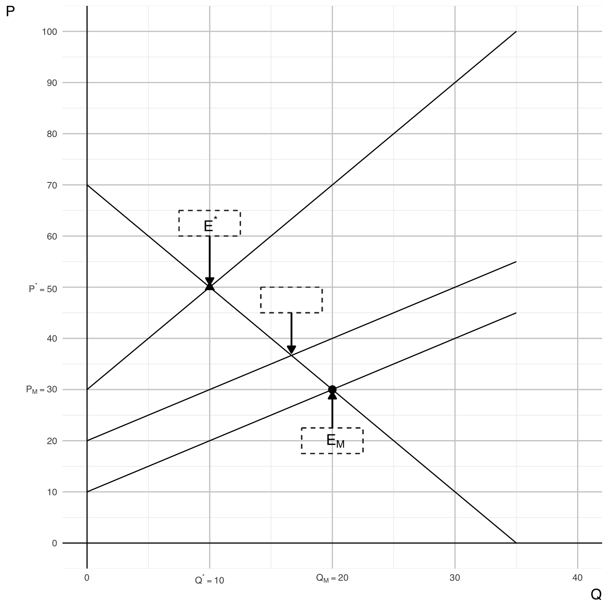
Part B
Show your algebraic steps to calculate the market equilibrium price and quantity, \(P_{M}\) and \(Q_{M}\).
Show answer
Market Equilibrium — Solve \(MB_R(Q) = MC_R(Q)\)
We set: \[ MB_R(Q) = 70 - 2Q, \quad MC_R(Q) = 10 + Q \]
Solve: \[ 70 - 2Q = 10 + Q \Rightarrow 60 = 3Q \Rightarrow Q_M = 20 \]
Then the equilibrium price: \[ P_M = MB_R(20) = 70 - 40 = 30 \]
✅ Market Equilibrium:
\[
(Q_M, P_M) = (20, 30)
\]
Part C
Show your algebraic steps to calculate the socially optimal equilibrium price and quantity, \(P^{*}\) and \(Q^{*}\).
Show answer
Social Optimum — Solve \(MB_R(Q) = SMC_R(Q)\)
The social marginal cost is: \[ SMC_R(Q) = MC_R(Q) + EMC_R(Q) = (10 + Q) + (20 + Q) = 30 + 2Q \]
Set efficiency condition: \[ 70 - 2Q = 30 + 2Q \Rightarrow 40 = 4Q \Rightarrow Q^* = 10 \]
Then: \[ P^* = MB_R(10) = 70 - 20 = 50 \]
✅ Social Optimum:
\[
(Q^*, P^*) = (10, 50)
\]
Part D
On the graph, clearly indicate the total benefit (\(TB\)) of the plastic good at the market equilibrium point \(E_{M}\).
Show answer
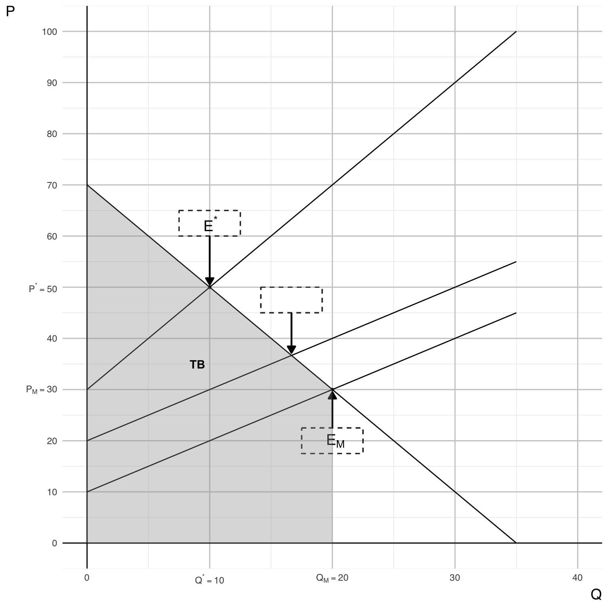
Part E
On the graph, clearly indicate the total variable cost (\(TC\)) of the plastic good at the market equilibrium point \(E_{M}\).
Show answer
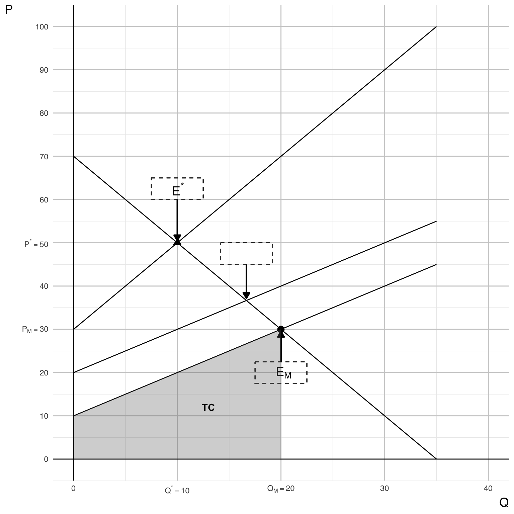
Part F
On the graph, clearly indicate the consumer surplus (\(CS\)) associated with the market equilibrium point \(E_{M}\).
Show answer
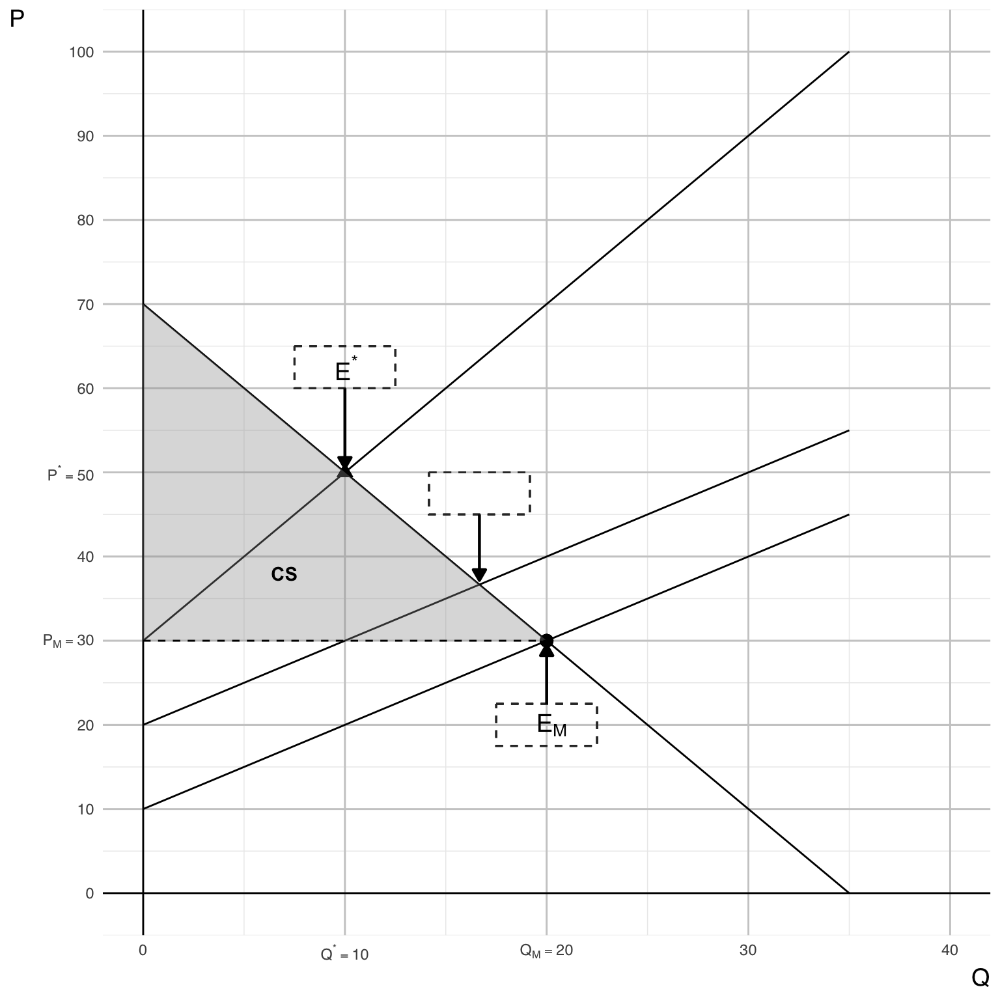
Part G
On the graph, clearly indicate the producer surplus (\(PS\)) associated with the market equilibrium point \(E_{M}\).
Show answer
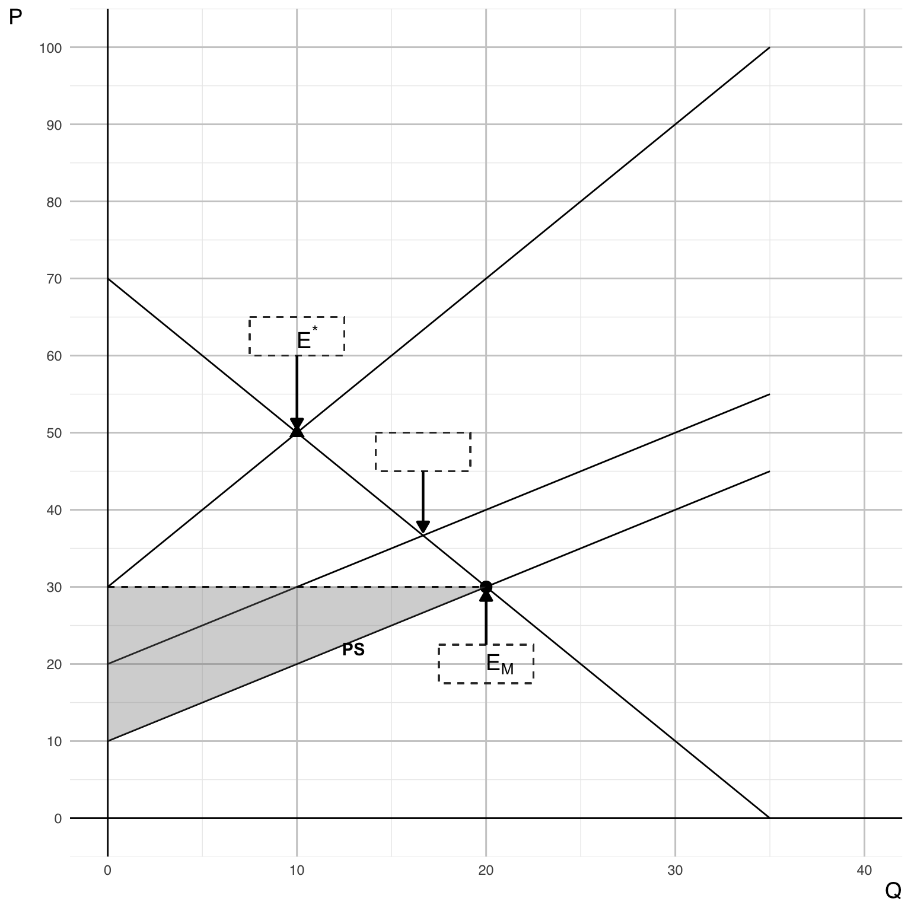
Part H
On the graph, clearly indicate the total external cost (\(EC\)) of the plastic good associated with the market equilibrium point \(E_{M}\).
Show answer
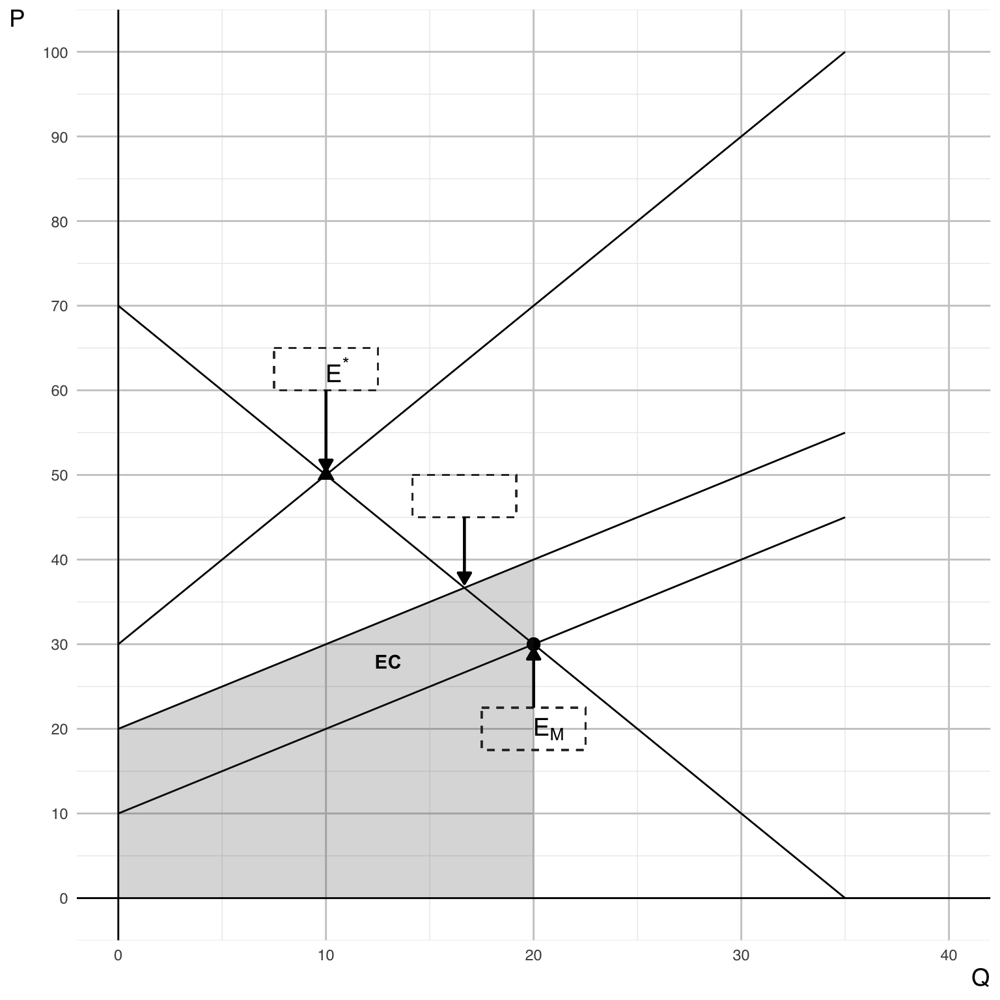
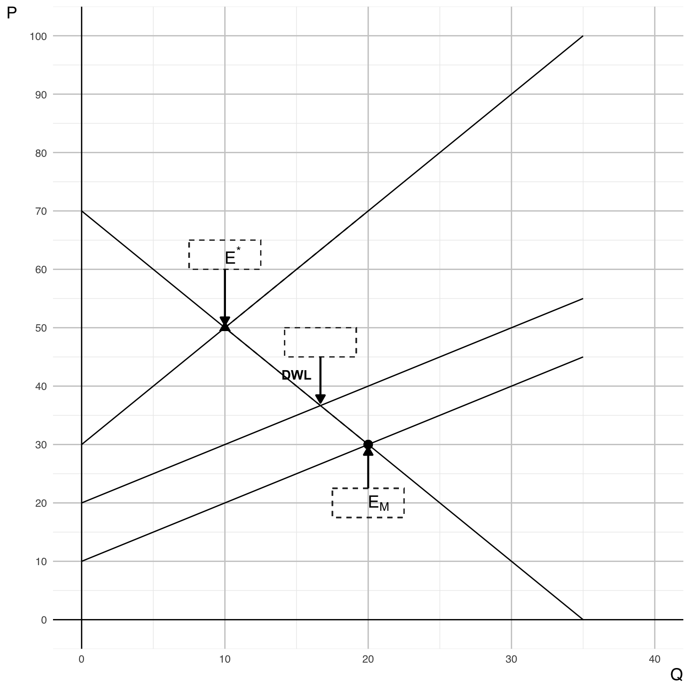
Part I
On the graph, clearly indicate the deadweight loss (\(DWL\)) associated with the market equilibrium point \(E_{M}\).
Show answer
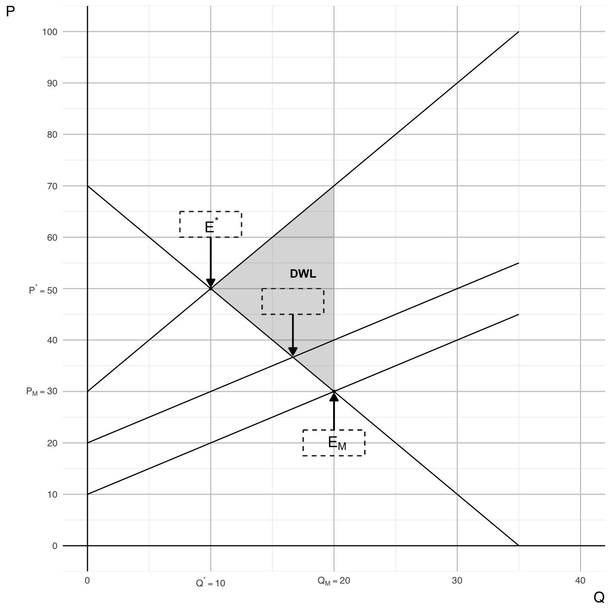
Part J
Calculate the Richland’s true social welfare (\(SW\)) associated with the market equilibrium point \(E_{M}\):
\[ \begin{aligned} SW &= CS + PS - EC \end{aligned} \]
- \(CS\): Consumer surplus
- \(PS\): Producer surplus
- \(EC\): External total cost
Show answer
Once we identify CS, PS, and External Cost (EC) on the graph, we see that:
\[ SW = CS + PS - EC = 0 \]
✅ Result:
At the market equilibrium, net social welfare is zero once external damages are subtracted. This indicates that private gains are fully offset by environmental harm.
Note
Compute Social Welfare at \(E_M\)
Recall:
- Consumer Surplus \(CS = 400\)
- Producer Surplus \(PS = 200\)
- External Cost \(EC = 600\)
Social welfare is: \[ SW = CS + PS - EC = 400 + 200 - 600 = 0 \]
Question 15
Assume Richland exports its entire volume of plastic waste to Poorland, which has lower income levels and population density, thereby fully eliminating Richland’s domestic external cost of plastic waste.
Assume that Richland’s goods market outcome is determined entirely by domestic market conditions, represented by \(MB_R(Q)\) and \(MC_R(Q)\).
Determine Richland’s new socially optimal equilibrium, \(E^{*}_{NEW}\), at \((Q^{*}_{NEW}, P^{*}_{NEW})\).
Show answer
If Richland fully eliminates its domestic external cost by exporting waste, then:
\[ SMC_R(Q) = MC_R(Q) \]
The new social optimum for Richland satisfies:
\[ 70 - 2Q = 10 + Q \;\Rightarrow\; Q^{*}_{\text{NEW}} = 20,\quad P^{*}_{\text{NEW}} = 30. \]
Explanation:
With no domestic externality remaining, the socially optimal condition reduces to the private market condition:
\[ MB = MC \]
Therefore, Richland’s efficient outcome now coincides with the original market equilibrium:
\[ (Q_M, P_M) = (20, 30) \]
Question 16 - Short Answers
A senior economist at a global development institution argued that, from a purely economic standpoint, it was “perfectly logical” for Richland to export plastic waste to Poorland, since the costs of disposal and the value placed on environmental health would be lower there.
Part A
Consider the figure below illustrating this economist’s argument for improved global efficiency through plastic waste trade (Export Quantity: \(RC2 - RC1\); Import Quantity: \(PC1 - PC2\); and \((RC2 - RC1) = (PC1 - PC2)\)). Describe how the economist would justify transferring plastic waste to Poorland, assuming that compensation is provided for the associated damages as shown in the figure.
Write approximately 4–6 sentences.
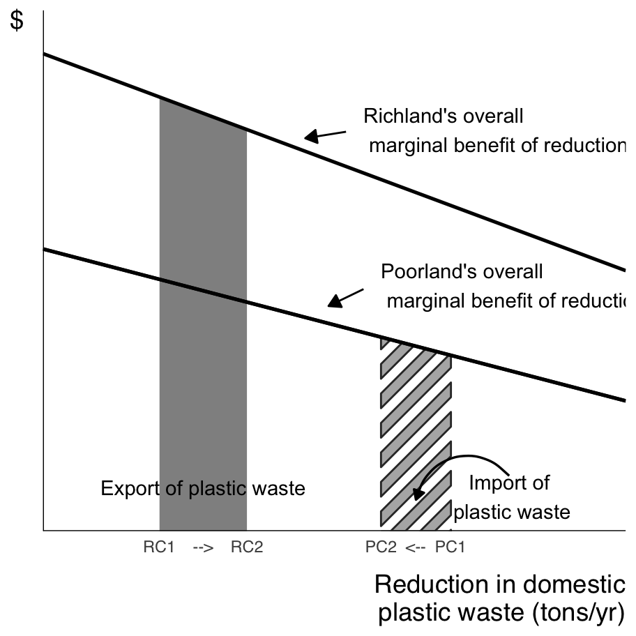
Show answer
The economist’s argument is based on the idea that the marginal damage from plastic waste differs between Richland and Poorland. If Poorland experiences lower marginal harm from additional waste—either because of lower population density or different income-based valuations—then transferring waste from Richland to Poorland appears to reduce total global damage.
As shown in the figure, the amount of waste exported by Richland \((RC2 - RC1)\) equals the amount received by Poorland \((PC1 - PC2)\), meaning total waste remains the same but is relocated to where damage is assumed to be lower. If Richland compensates Poorland for accepting this waste by paying an amount equal to the local marginal damages, the economist would claim that both sides could be made better off or at least not worse off. In this framework, transferring waste is presented as a way to equalize marginal damages across regions, which the economist views as an “efficient” allocation of environmental burdens.
Part B
- Does this trade improve overall global well-being?
- Does everyone benefit from it within each country? If not, who are the winners and who are the losers from this trade in each country?
- What are the main ethical and practical problems in the economist’s argument that exporting plastic waste to Poorland increases global efficiency?
Write approximately 5–7 sentences.
Show answer
From a narrow efficiency perspective, the trade could increase global well-being if the marginal damage of waste disposal is genuinely lower in Poorland and compensation fully reflects the harm caused.
However, real-world distributional outcomes are uneven. In Richland, producers and consumers benefit because they avoid domestic environmental damages while still enjoying the same production level and market price. In Richland, companies in recycling business may lose their business. In Poorland, some individuals who receive compensation payments may benefit, but local residents, future generations, and nearby ecosystems may still face pollution risks that they did not agree to. This means not everyone benefits equally within each country—the winners include compensated groups and Richland’s consumers, while losers can include uncompensated local communities near disposal sites, especially those with limited political voice or economic power.
The economist’s argument is problematic in practice. It assumes perfect monitoring, full enforcement, and transparent compensation mechanisms, which is unrealistic given cross-border waste flows, informal labor conditions, and weak oversight institutions. Moreover, the idea that compensation can fix everything ignores irreversible harms such as health damage, groundwater contamination, or loss of biodiversity, which cannot be fully undone once the damage occurs.
Ethically, the proposal raises serious concerns about environmental justice, consent, and intergenerational fairness, especially when lower income levels are used to justify lower environmental protection standards. There is also a moral hazard problem, as Richland may become less motivated to reduce waste at its source.
Note
Moral Hazard
Moral hazard is an economic problem that occurs when one party engages in riskier or less responsible behavior because they do not bear the full consequences of their actions.
It typically arises when there is asymmetric information — one side cannot fully observe the other’s behavior — such as in insurance, lending, or policy contexts.
A long-term solution to plastic waste trade must move beyond simply relocating waste and toward reducing waste at the source while ensuring fair and accountable global governance. Policies should:
- Reduce plastic production and consumption through taxes on virgin plastics, extended producer responsibility, and design standards that reduce single-use packaging.
- Create incentives for domestic recycling and circular economy systems so that Richland does not externalize waste to other countries.
- Strengthen global environmental governance to ensure that no community—especially in Poorland—is forced to accept pollution without full consent and oversight.
- Require transparent compensation and monitoring if any waste trade occurs, with local community participation, not just national-level agreements.
- Support Poorland with technology transfer and investment in clean waste processing, rather than transferring waste alone.
✅ Key idea: Instead of asking “Where should the waste go?”, environmental economics shifts the question to “How do we reduce the creation of plastic waste and ensure fairness when environmental burdens are allocated?”